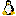
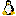

Sailor Moon Tutorial
Lesson 1. Create a New KiSS Set
-
We will create a brand new Sailor Moon KiSS
set. Ensure that UltraKiss is showing the main logo screen. Close
any existing set. If you want to ensure that your new KiSS set is created to be
compatible with other viewers, press one of the viewer compatibility preset buttons
on the toolbar

 
or use Tools-Options-Compatibility to set a compatibility preset.
This lesson requires editing of the KiSS set so ensure that the Edit Enable toggle button
on the toolbar is set.

or use Tools-Options-Compatibility to set a compatibility preset.
This lesson requires editing of the KiSS set so ensure that the Edit Enable toggle button
on the toolbar is set.
-
Use File-New. This will create a new KiSS
set at size (448,320) with a black border and one empty page.
-
Use File-Properties to change the new KiSS
configuration (CNF) file properties. The attributes section of the
Properties dialog will show a playfield size of (448,320). Press the
small button beside this attribute and change the screen size to
(600,400). Next, press the small button beside the border
color attribute and select a white background from the color swatch
panel. When you choose this color the screen background will change to
white. Exit the configuration Properties dialog by pressing the OK
button.
-
Use Edit-Import Image to New Object. Select
the sailormoon.gif file from the Tutorial/Sailor
Moon directory. The image will be loaded and positioned at the upper left
corner of the playfield. It will also be converted to a CEL file with an approriate
KCF. It will also have a blue selection marquee box drawn around the image. This box
shows that the image has been selected for editing.
-
Drag the image to the centre of the screen.
-
Use Edit-Import Image to New Object. Import
the leftboot.gif file from the Tutorial/Sailor
Moon directory. Drag the image to position it properly on the doll.
-
Use Edit-Import Image to New Object. Import
the rightboot.gif file from Tutorial/Sailor
Moon. Drag the image to position it properly on the doll.
-
We will now put the two boots into one object. Position the mouse pointer
to the left and above the left boot, hold the alt key down and drag the mouse
to the right and down, and select both the left and right boots. A red
selection box will show the selection area as you drag. When you release
the mouse button both boots should be selected, with blue boundaries.
-
Use Edit-New Group to place both boots into the
same object group. A single blue selection box should now enclose both
boots.
-
Use View-Restart or press F8 to reload the set in UltraKiss
and commit your changes. The initial positions will be set for all new
objects imported into the set. You should see the Sailor Moon doll and
boots displayed correctly when the set is reloaded.
-
Try to pick up the boots and drag them. Both boots should move as one
object. You can use the View-Reset command
or press F7 to restore all objects to their initial positions.
-
Use File-Save As to save your work. Save the
new KiSS set to the Tutorial/Sailor Moon directory or a directory of your
choice. The configuration element name should be CNF1.cnf
if you began this tutorial after first starting UltraKiss. You can
overwrite any existing element of the same name. If you have slected one of the compatibility presets, seven files will be
written. There will be the three image files sailormoon.cel,
leftboot.cel, rightboot.cel; the three associate kcf files; and the new data set configuration file CNF1.cnf.
Next Document: Sailor Moon Lesson 2
Prior Document: UltraKiss Tutorials
Copyright (c) 2002-2023 William Miles